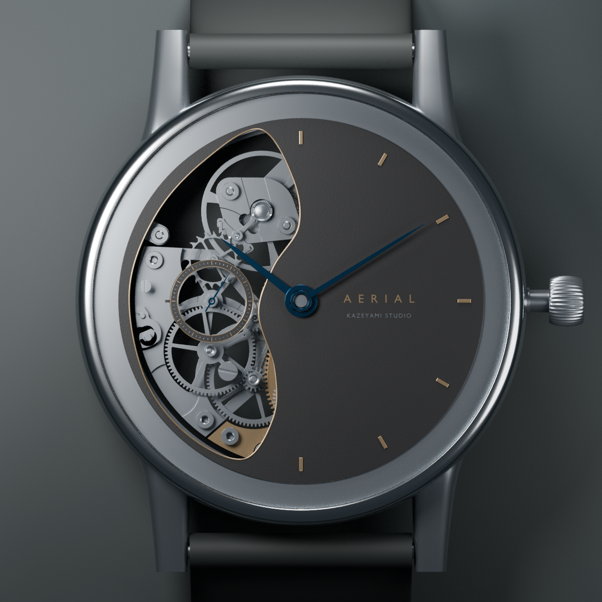
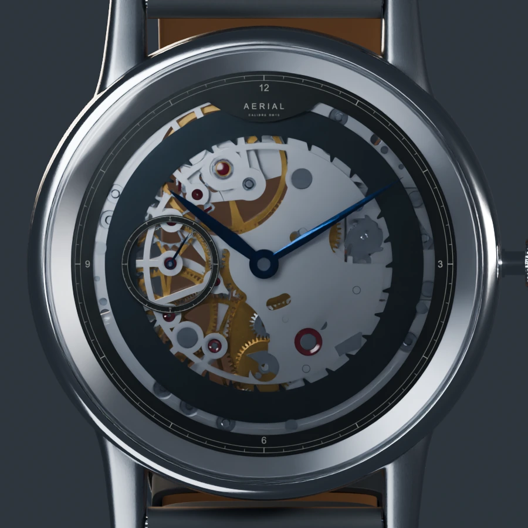
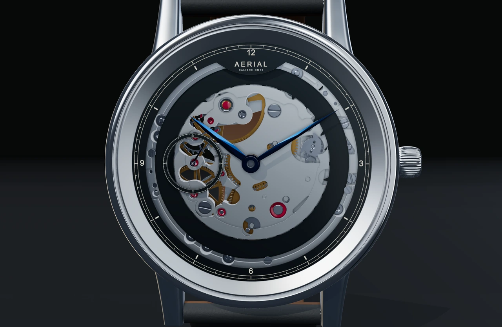
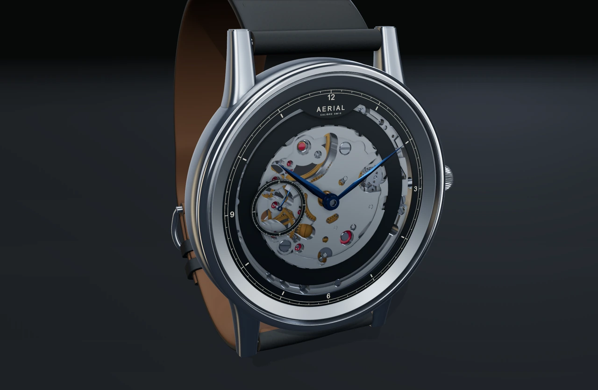
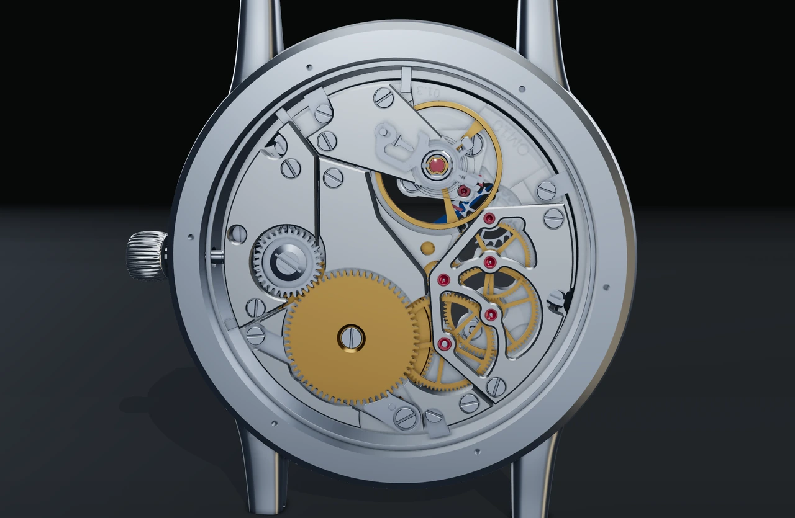
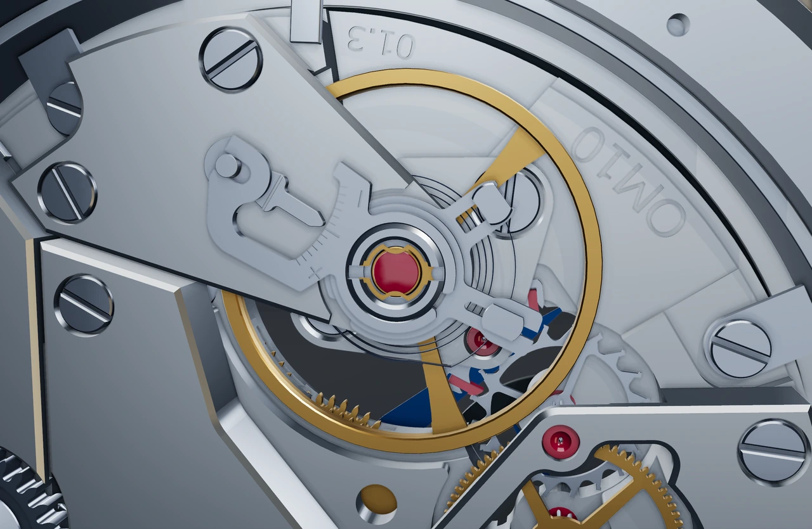
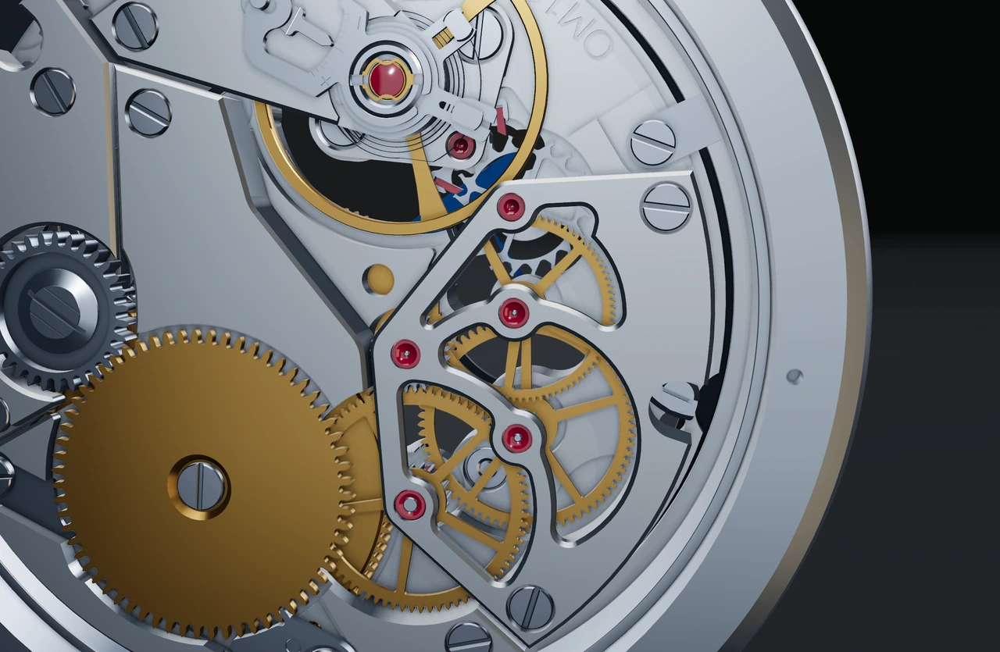
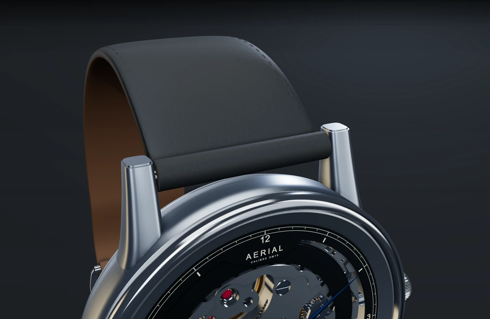

Space with a purpose.
A slender chapter frames the movement. An independent seconds ring leaves the centre open.
01 / MECHANICAL OBJECTS
Explore the case, movement
and mechanics of Aerial.
Preparing watch…
Preparing the watch studio…
Satin silver meets polished edges. Warm brass turns beneath a slender graphite chapter. Explore the character of each surface and the movement that gives it life.
A slender chapter frames the movement. An independent seconds ring leaves the centre open.
Directional satin, polished steel, warm brass and deep blue hands give each part its own character.
The measured gear train carries each impulse. Slow the movement down, or pause at any moment to look closer.


The open-work front is a separate design proposal. The Left Crescent face is an authored overlay on the original movement. Three original front plates are hidden for this cutaway presentation; structural replacement plates and mounting remain unvalidated. The original 166-mesh OM10 and solid-dial assembly remain available with Open-work front switched off.
Materials and animation are visual studies. Structural loads, tolerances, sealing and manufacture still require validation.






The native renders preserve the earlier design study. The historical live captures below show the earlier design, not the new Left Crescent face.